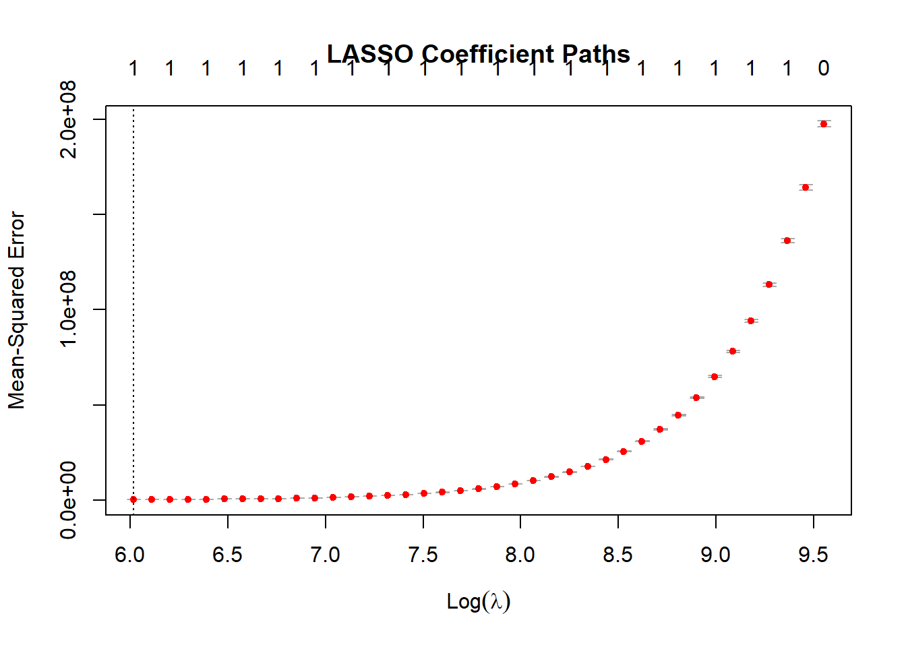
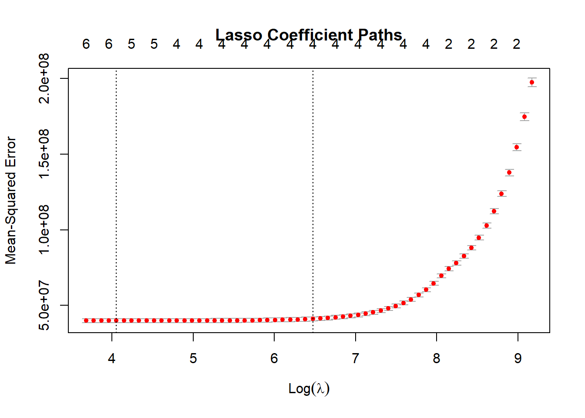

Name Age Gender Blood_Type
Length:10000 Min. :18.00 Length:10000 Length:10000
Class :character 1st Qu.:35.00 Class :character Class :character
Mode :character Median :52.00 Mode :character Mode :character
Mean :51.45
3rd Qu.:68.00
Max. :85.00
Medical_Condition Hospital Insurance_Provider Billing_Amount
Length:10000 Length:10000 Length:10000 Min. : 1000
Class :character Class :character Class :character 1st Qu.:13507
Mode :character Mode :character Mode :character Median :25258
Mean :25517
3rd Qu.:37734
Max. :49996
Admission_Type Date_of_Admission Discharge_Date Medication
Length:10000 Length:10000 Length:10000 Length:10000
Class :character Class :character Class :character Class :character
Mode :character Mode :character Mode :character Mode :character
Test_Results Length_Of_Stay
Length:10000 Min. : 1.00
Class :character 1st Qu.: 8.00
Mode :character Median :16.00
Mean :15.56
3rd Qu.:23.00
Max. :30.00
#Transform Data to Dummy VariablesHealth_Care_Transform <-as.matrix(predict(Health_Care_Dummy_Model, newdata = Health_Care_Updated))class(Health_Care_Transform)
#Split Data Into Predictors (X) and Response Variable (y)Health_Care_X <-as.matrix(Health_Care_Model_Data[, -ncol(Health_Care_Model_Data)]) Health_Care_Y <- Health_Care_Model_Data[, "Billing_Amount"]
#Extract Coefficients At The Optimal LambdaHealth_Care_LASSO_Coefficients <-coef(Health_Care_LASSO_Model, s ="lambda.min")print(Health_Care_LASSO_Coefficients)
#Predict Values Using The Final ModelHealth_Care_Predictions <-predict(Health_Care_LASSO_Final_Model, newx = Health_Care_X, s = Health_Care_Best_Lambda)head(Health_Care_Predictions)
Warning in plot.window(...): "xvar" is not a graphical parameter
Warning in plot.window(...): "label" is not a graphical parameter
Warning in plot.xy(xy, type, ...): "xvar" is not a graphical parameter
Warning in plot.xy(xy, type, ...): "label" is not a graphical parameter
Warning in axis(side = side, at = at, labels = labels, ...): "xvar" is not a
graphical parameter
Warning in axis(side = side, at = at, labels = labels, ...): "label" is not a
graphical parameter
Warning in axis(side = side, at = at, labels = labels, ...): "xvar" is not a
graphical parameter
Warning in axis(side = side, at = at, labels = labels, ...): "label" is not a
graphical parameter
Warning in box(...): "xvar" is not a graphical parameter
Warning in box(...): "label" is not a graphical parameter
Warning in title(...): "xvar" is not a graphical parameter
Warning in title(...): "label" is not a graphical parameter

2. How hospital stays (length of stay and medical condition) in different hospitals influence billing amounts for patients?
# selecting the required column for the purposeq2_data <- Health_Care %>%select(Hospital, Medical_Condition, Length_Of_Stay, Billing_Amount)head(q2_data)
# Calculate average billing per hospital# reason - as there can be several billing amount for the same hospitalavg_billing <-aggregate(Billing_Amount ~ Hospital, q2_data, mean)head(avg_billing)
# Group hospitals into quantiles (Low, Medium, High, Very High)# as there are several hundreds of hospitals, we are grouping it as low, medium, high# create a categorical variable = avg_billing$Billing_Group <-cut( avg_billing$Billing_Amount, breaks =quantile(avg_billing$Billing_Amount, probs =seq(0, 1, 0.25)), labels =c("Low", "Medium", "High", "Very High"), include.lowest =TRUE)# Merge billing groups back into the main datasetq2_data <-merge(q2_data, avg_billing[, c("Hospital", "Billing_Group")], by ="Hospital")head(q2_data)
# Convert Medical_Condition to dummy variables- as lasso can be used ony for numerical variablemed_numeric <-model.matrix(~ Medical_Condition -1, data = q2_data)# Add dummy variables to the main datasetq2_data <-cbind(q2_data, med_numeric)head(q2_data)
# Find all the column with numeric value and assign to dummy variablenumeric_columns <-c("Length_Of_Stay", grep("Medical_Condition", colnames(q2_data), value =TRUE))q2_data <- q2_data[, !colnames(q2_data) %in%"Medical_Condition"]# Update numeric_columns to exclude Medical_Conditionnumeric_columns <- numeric_columns[numeric_columns !="Medical_Condition"]
# Calculate residualsresiduals <- y - predictions# Calculate Mean Squared Error (MSE)mse <-mean(residuals^2)print(paste("Mean Squared Error:", mse))
[1] "Mean Squared Error: 39864949.9657945"
# Calculate Total Sum of Squares (TSS)tss <-sum((y -mean(y))^2)# Calculate Residual Sum of Squares (RSS)rss <-sum(residuals^2)# Calculate R-squaredr_squared <-1- (rss / tss)print(paste("R-squared:", r_squared))
[1] "R-squared: 0.79852850622389"
# cross validation plot for Lassoplot(lasso_model, xvar ="lambda", label =TRUE, main ="Lasso Coefficient Paths")
Warning in plot.window(...): "xvar" is not a graphical parameter
Warning in plot.window(...): "label" is not a graphical parameter
Warning in plot.xy(xy, type, ...): "xvar" is not a graphical parameter
Warning in plot.xy(xy, type, ...): "label" is not a graphical parameter
Warning in axis(side = side, at = at, labels = labels, ...): "xvar" is not a
graphical parameter
Warning in axis(side = side, at = at, labels = labels, ...): "label" is not a
graphical parameter
Warning in axis(side = side, at = at, labels = labels, ...): "xvar" is not a
graphical parameter
Warning in axis(side = side, at = at, labels = labels, ...): "label" is not a
graphical parameter
Warning in box(...): "xvar" is not a graphical parameter
Warning in box(...): "label" is not a graphical parameter
Warning in title(...): "xvar" is not a graphical parameter
Warning in title(...): "label" is not a graphical parameter

3. How are blood types related to certain medical conditions?